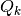
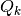

導入¶
この文書の目的は、内部の詳細を報告することです GetFEM++ ユーザードキュメントに場所がない開発者にとって便利な内部の詳細報告です。また、今後の GetFEM++ 発展のための主要な展望を概説することです。開発する変更の一覧と主なタスクは Savannah https://savannah.nongnu.org/task/?group=getfem で更新されます。
GetFEM++ プロジェクトは、オープンソースの汎用的な有限要素ライブラリの開発に焦点を当てています。その目的は、偏微分方程式 (PDE) で記述されたシステムのモデル化のための数値コードを容易に構築できる有限要素フレームワークを提供することです。ライブラリによって提供される手法から別の手法への切り替えを可能な限り容易にするという意味で、ライブラリの使用法の柔軟性に特別な注意が払われます。
これを可能にする主要な点は従来の有限要素コードと比較して、PDEモデルと有限要素法の記述との完全な分離にあります。また、積分法 (厳密または近似)、幾何学的変換 (線形または非線形)、および参照要素に記述された任意の次数の有限要素法の間で分離が行われます。 GetFEM++ は非常に汎用的な有限要素コードを構築するために使用することができます。ここで有限要素、積分法、メッシュの次元は非常に簡単に変更することができるパラメータです、これにより、大規模な範囲の実験を可能にします。多数の例が、配布物の tests ディレクトリにあります。
また、新しい有限要素法の追加を可能な限りシンプルにすることも目標としています。標準法では, 有限要素形状関数の記述と参照要素の自由度の関係の種類があれば十分です。拡張は、Hermite要素、区分多項式、非多項式、ベクトル要素、および XFem に対して提供されます。定義可能なメソッドの例を次に示します。任意のji次元と寸法の simplices の  、  平行六面体、
、  平行六面体、  、 気泡関数、Hermite要素、階層ベースの要素 (マルチグリッド法インスタンスのメソッド)、不連続 または ‘、XFem、Argyris、HCT、Raviart-Thomas。
、 気泡関数、Hermite要素、階層ベースの要素 (マルチグリッド法インスタンスのメソッド)、不連続 または ‘、XFem、Argyris、HCT、Raviart-Thomas。
ライブラリはまた、古典的な微分方程式のための構築手順などの有限要素のための標準的なツールが含まれています。例えば補間法, 規範の計算, メッシュ操作, 境界条件, メッシュからスライスの抽出などの後処理ツール...
GetFEM++ プロジェクトの目的では、グラフィックインターフェイスを使用した構造力学の計算を可能にする有限要素コードを扱う準備ができていません。これは基本的に C++ の有限要素コードのビルドを可能にするライブラリです。しかし、Python、Scilab および matlab インタフェースは、問題の定義、有限要素法の選択、およびグラフィカルな後処理のアプリケーションへの結合を簡単に構築することができます。
Copyright © 2004-2018 GetFEM++ project.
GetFEM++ のテキストウェブサイトおよびドキュメンテーションは GNU Free Documentation License の条件の下で変更および再利用可能です。
GetFEM++ is free software; you can redistribute it and/or modify it under the terms of the GNU Lesser General Public License as published by the Free Software Foundation; either version 3 of the License, or (at your option) any later version along with the GCC Runtime Library Exception either version 3.1 or (at your option) any later version. This program is distributed in the hope that it will be useful, but WITHOUT ANY WARRANTY; without even the implied warranty of MERCHANTABILITY or FITNESS FOR A PARTICULAR PURPOSE. See the GNU Lesser General Public License and GCC Runtime Library Exception for more details. You should have received a copy of the GNU Lesser General Public License along with this program; if not, write to the Free Software Foundation, Inc., 51 Franklin St, Fifth Floor, Boston, MA 02110-1301, USA.

前のトピックへ
次のトピックへ
Download
Main documentations
- GetFEM++ User documentation
- Python Interface
- Matlab Interface
- Scilab Interface
- Gmm++
- GetFEM++ project